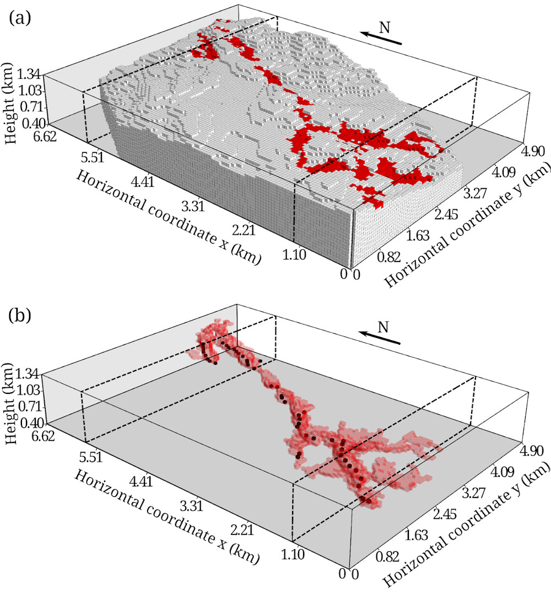

Uieda, L., and V. C. F. Barbosa (2012), Robust 3D gravity gradient inversion by planting anomalous densities, Geophysics, 77(4), G55-G66, doi:10.1190/geo2011-0388.1
The inversion method proposed in this paper is implemented in the open-source
Fatiando a Terra Python library
as the fatiando.gravmag.harvester module.
The module was introduced in
version 0.1
of the library.
We have developed a new gravity gradient inversion method for estimating a 3D density-contrast distribution defined on a grid of rectangular prisms. Our method consists of an iterative algorithm that does not require the solution of an equation system. Instead, the solution grows systematically around user-specified prismatic elements, called “seeds,” with given density contrasts. Each seed can be assigned a different density-contrast value, allowing the interpretation of multiple sources with different density contrasts and that produce interfering signals. In real world scenarios, some sources might not be targeted for the interpretation. Thus, we developed a robust procedure that neither requires the isolation of the signal of the targeted sources prior to the inversion nor requires substantial prior information about the nontargeted sources. In our iterative algorithm, the estimated sources grow by the accretion of prisms in the periphery of the current estimate. In addition, only the columns of the sensitivity matrix corresponding to the prisms in the periphery of the current estimate are needed for the computations. Therefore, the individual columns of the sensitivity matrix can be calculated on demand and deleted after an accretion takes place, greatly reducing the demand for computer memory and processing time. Tests on synthetic data show the ability of our method to correctly recover the geometry of the targeted sources, even when interfering signals produced by nontargeted sources are present. Inverting the data from an airborne gravity gradiometry survey flown over the iron ore province of Quadrilátero Ferrífero, southeastern Brazil, we estimated a compact iron ore body that is in agreement with geologic information and previous interpretations.
 Inversion results for data from the Quadrilátero Ferrífero, southeastern Brazil. (a-c) Perspective views of the estimated density-contrast distribution, where prisms with zero density contrast are not shown or shown in gray and prisms with density contrast 1 g/cm³, corresponding to the iron ore body of the Cauê itabirite, are shown in solid or transparent red. The seeds used in the inversion are shown as black prisms.
The following is an animation of the growth algorithm during the inversion of synthetic data. The video is available at figshare: 10.6084/m9.figshare.91469
@article{uieda2012,
title = {Robust 3D gravity gradient inversion by planting anomalous densities},
volume = {77},
issn = {00168033},
doi = {10.1190/geo2011-0388.1},
number = {4},
journal = {Geophysics},
author = {Uieda, Leonardo and Barbosa, Valéria C. F.},
year = {2012},
pages = {G55--G66},
}